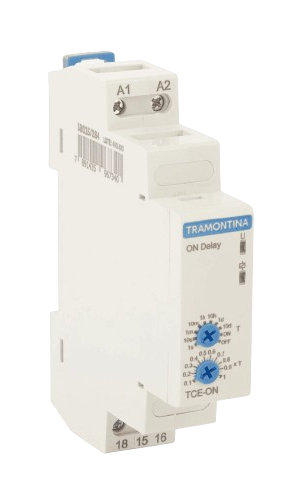

Relé temporizador
O que é um Relé Temporizador?
O relé temporizador (também conhecido como timer ou relé de tempo) é um componente de comandos elétricos que funciona como uma chave inteligente acionada por tempo. Em vez de simplesmente ligar ou desligar um circuito na hora, ele aguarda, conta um tempo pré-programado ou gera ciclos antes de mudar o estado dos seus contatos elétricos.
Ele é amplamente utilizado na automação e na indústria para organizar a sequência de funcionamento de máquinas e equipamentos de forma precisa e segura.
Como Ele Funciona e Quais São Seus Principais Tipos?
O funcionamento depende do tipo de temporização desejada para o circuito:
✦ Retardo na Energização (On Delay): Quando a bobina do relé recebe energia, ele inicia a contagem do tempo. Somente ao término desse tempo programado é que os contatos comutam (mudam de estado) e alimentam a carga, permanecendo assim até que a energia seja cortada.
✦ Retardo na Desenergização (Off Delay): Ao energizar o relé, ele aciona os contatos imediatamente. Quando a energia do relé é cortada, ele começa a contar o tempo ajustado. Só ao final dessa contagem os contatos voltam para a posição original, desligando o circuito.
✦ Pulso na Energização: Assim que recebe energia, os contatos comutam imediatamente e a contagem de tempo começa. Ao fim do tempo estipulado, os contatos retornam à posição inicial, criando um "impulso" elétrico temporário.
✦ Cíclico: Trabalha em sequências contínuas de liga/desliga. Ele possui duas regulagens de tempo independentes: uma para determinar quanto tempo os contatos ficam acionados e outra para definir quanto tempo ficam desligados.
✦ Estrela-Triângulo: Muito usado na partida de motores elétricos. Ao energizar, aciona primeiro os contatos da ligação "estrela". Ao atingir o tempo configurado, desliga a estrela, aguarda uma pausa minúscula de segurança (cerca de 100 milissegundos) e aciona a ligação "triângulo".
✦ Bloco Temporizador Pneumático: Diferente dos eletrônicos, não possui bobina própria. É acoplado diretamente na frente de um contator e utiliza a passagem mecânica de ar (via diafragma) para controlar a contagem do tempo.
Principais Aplicações no Dia a Dia Industrial
Graças à sua precisão, o relé temporizador é usado para:✦Proteger a rede elétrica: Evita sobrecargas ao dar partida sequencial em múltiplos motores (não ligando todos ao mesmo tempo).
✦ Partida de motores: Facilita a transição da chave estrela-triângulo e auxilia na reversão do sentido de rotação.
✦ Automação e CLPs: Padroniza sinais e ajuda no sincronismo de esteiras, processos produtivos e painéis de comando.
✦ Controle de processos: Auxilia no prolongamento de impulsos e no retardo de acionamento/desligamento de cargas.
